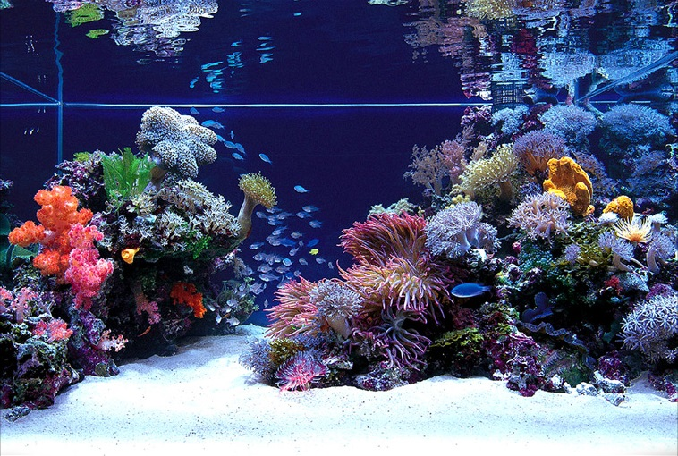

A Look Into The Marine & Fish Hobby
The main reason why so many aquarists decide to spend the extra time, money and efforts that a saltwater aquarium require is that a saltwater aquarium can house a wide range of animals that you could never keep in a freshwater aquarium. It will for instance be possible for you to keep vibrantly coloured marine fish species like clownfish, wrasses, and anthias. A saltwater aquarium can also be filled with live corals, anemones, sponges, worms and so on. In the saltwater aquariums of advanced aquarists you can even find jellyfish, octopus and other large invertebrates.
Keeping a marine aquarium is typically more difficult than keeping a basic freshwater aquarium. There are naturally exceptions to this rule, some aquarists have freshwater aquariums that contain species that are extremely hard to keep and breed in captivity. It is also possible to create a basic saltwater aquarium that beginner aquarists can handle, as long as you are prepared to gather a lot of information and develop your knowledge on the subject before you set up the aquarium. Even advanced freshwater aquarists should read through the guidelines before they create a saltwater aquarium, since the ecology of a marine aquarium differs a lot from that of a freshwater aquarium.
Generally speaking, a marine aquarium will be more expensive to set-up than a freshwater aquarium since marine species tend to be quite pricey and require high-priced equipment to survive, but there are of course exceptions to this rule. A freshwater aquarium filled with delicate and high priced species naturally be more costly than a basic marine aquarium filled with tolerant and fairly inexpensive marine species. It is possible to set-up and maintain a rather cheap marine aquarium if you go for readily available marine creatures that do not require pristine water quality.
